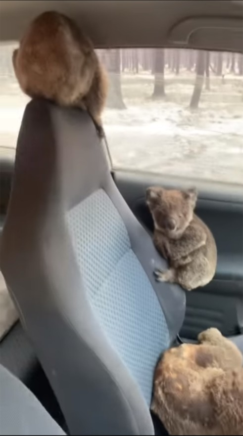

Welcome to K&K
What we stand for:

Kangaroos embody cultural, social, ecological and spiritual significance.
Much like lions, wolves and whales, kangaroos are iconic species that are valued and recognised worldwide.
Yet across Australia they are relentlessly persecuted. Every night when the sun goes down the violence towards kangaroos starts.
Kangaroos are shot at night when they are most active.
What we want to achieve:
